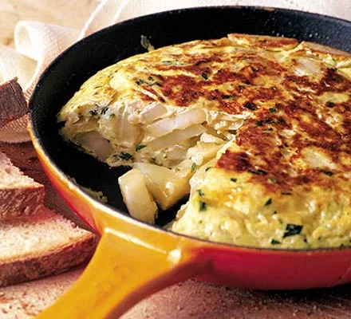

Tortilla de patatas!
Tortilla de patatas

Crispy, fried potatoes and eggs make up this popular Spanish Omelette (Tortilla) recipe, perfect for picnics, parties, bbq’s, or your traditional Tapas menu! Upgrade your omelette!
Ingredients:
- 500 g. of potatoes
- 1 onion, preferably white
- 150 ml. extra-virgin olive oil
- 6 eggs
Directions:
- Scrape the new potatoes or leave the skins on, if you prefer. Cut them into thick slices. Chop the onion
- Heat the extra-virgin olive oil in a large frying pan, add the potatoes and onion and stew gently, partially covered, for 30 mins, stirring occasionally until the potatoes are softened. Strain the potatoes and onion through a colander into a large bowl (set the strained oil aside)
- Beat the eggs separately, then stir into the potatoes with the parsley and plenty of salt and pepper. Heat a little of the strained oil in a smaller pan
- Tip everything into the pan and cook on a moderate heat, using a spatula to shape the omelette into a cushion.
- When almost set, invert on a plate and slide back into the pan and cook a few more minutes
- Invert twice more, cooking the omelette briefly each time and pressing the edges to keep the cushion shape. Slide on to a plate and cool for 10 mins before servingg